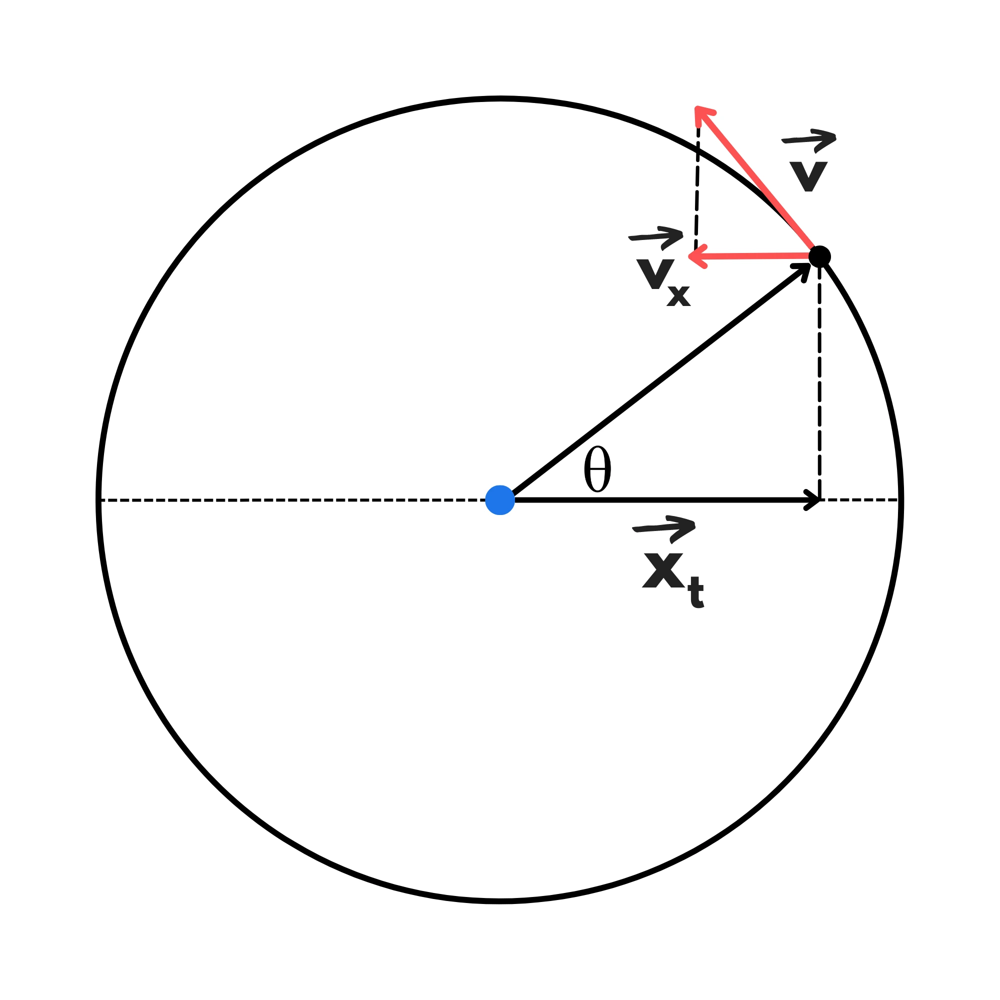
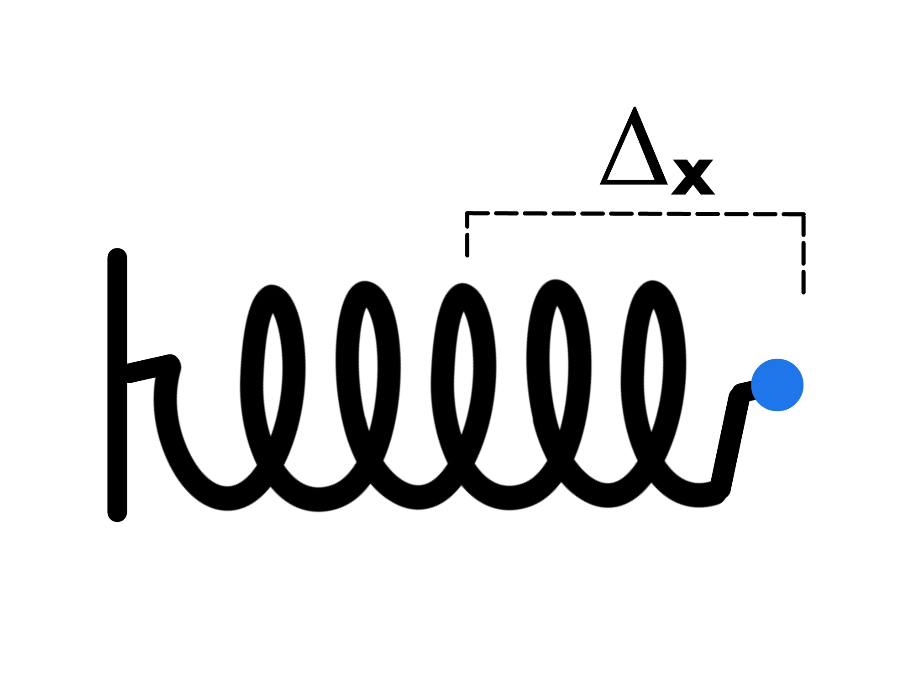
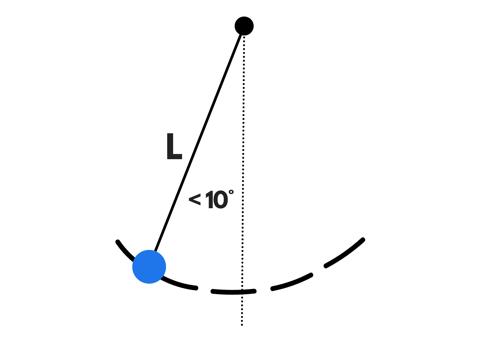

Cosa hanno in comune un pendolo, una molla e la proiezione di corpo che si muove di moto circolare uniforme? Che effettuano tutti e tre moti armonici.
Il moto armonico è il moto effettuato dalla proiezione sul diametro di un corpo che si muove di moto circolare uniforme.
Troviamo per prima cosa la legge oraria:
Ricordiamo innanzitutto che:
\(w= {\Delta \theta \over \Delta t}\)
e quindi:
\(w\cdot \Delta t= \theta _1 - \theta _0\)
Per semplificare consideriamo il caso in cui \(t_0=0.\) Isolando \(\theta_1\) otteniamo quindi:
\(\theta_1\) = \(w\cdot t_1 + \theta _0\)
Nel moto armonico \(theta _0\) si chiama fase e si indica con la lettera greca \(\phi\). Lasciamo \(t_1\) libero di variare e mettiamo \(\theta_1\) in funzione di \(t\).
\(\theta (t)= w\cdot t + \phi\)
Sapendo questo, mettiamo l'origine al centro della circonferenza. Nel moto armonico, chiamiamo il valore del raggio come ampiezza \(A\). La velocità angolare la richiamiamo invece pulsazione, ma la lettera rimane la stessa:
Possiamo usare la trigonometria per trovare \(x(t)\). Guardando al triangolo rettangolo che si forma con la proiezione, il raggio e la posizione del corpo otteniamo:
\({x(t) \over A}= \cos (\theta) \)
\(x(t)=A \cos (\theta)\)
Usando la formula che abbiamo trovato prima per \theta otteniamo la formula finale:
\(x(t)= A \cos (wt +\phi)\)
Per angoli compresi tra \({\pi \over 2}\) (\(90^{\circ}\)) e \({3 \pi \over 2}\) \((270^{\circ}\)) il loro coseno è negativo ed infatti per questi valori il corpo si trova a sinistra dell'origine avendo perciò una posizione negativa.
Grazie però alla formula con \(\theta\) , si nota che, come ci si aspettava, per \(\theta = 0\) otteniamo:
\(x(t) = A \cos (0) =A \cdot 1 = A\)
e per \(\theta = \pi (180^{circ})\) abbiamo:
\(x(t)=A \cos (\pi)= A \cdot (-1) =-A\)
Ovvero i due estremi del diametro. Inoltre per \(\theta= {\pi \over 2} (90^{\circ})\) abbiamo:
\(x(t)=A \cos({\pi over 2})=0\)
Perché infatti si trova all'origine.
Raramente si dimostrano le formula per la velocità e l'accelerazione del moto armonico. Quindi noi forniremo subito la formule e consiglieremo un modo per ricordarle:
La velocità è uguale a:
\(v(t)=-Aw \sin(wt + \phi)\)
o usando \(\theta\) :
\(v(t)=-Aw \sin (\theta)\)
Quando abbiamo la velocità massima? \(A\) ed \(w\) restano costanti durante il moto, quindi dobbiamo solo guardare a \(\sin (\theta)\). Sappiamo che \(\sin (\theta)) è compreso tra 1 e -1. Quindi la velocità massima sarà:
\(v(t)_{max}=Aw\)
Questo avviene quando \(\theta = {3 \pi \over 2}\) perché \(sin ({3 \pi \over 2}) = -1\) , ovvero quando il corpo passa per l'origine.
La velocità si annulla invece quando si trova agli estremi del diametro (perché \(\sin (0) \) \(= \sin (\pi) =0)\) che è infatti quando il corpo cambia direzione.
L'accelerazione è invece uguale a:
\(a(t)=-A {w}^{2} \cos (wt + \phi)\)
o usando \(\theta\):
\(a(t)=-A {w}^{2} \cos (\theta)\)
Quando abbiamo invece l'accelerazione massima? Per lo stesso ragionamento di prima dobbiamo vedere come cambia \(\cos (\theta)\). Anche \(\cos(theta)\) è sempre compreso tra 1 e - 1 e quindi:
\(a(t)_{max}=A {w}^2\)
Questa volta però cambia il valore di \theta. Infatti adesso avviene quando \(\theta = {\pi \over 2}\) (perché \(\cos ( {\pi \over 2}) = -1\)), ovvero quando si trova all'estremo sinistro. Pure quando si trova all'estremo l'accelerazione vale \(A{w}^{2}\)però con segno opposto perché punta nel verso opposto.
Si annulla invece quando passa per l'origine (perché \(\cos ({\pi \over 2})=\)\(\cos ({3 \pi \over 2})=0)\).
Per ricordarvi e formule basta pensare che ogni volta moltiplichiamo per \(w\) , cambiamo \(\sin ()\) in \(\cos()\) e cambiamo \(\cos ()\) in \(-\sin ()\) .
\(x(t)=A \cos(wt + \phi) \)
\(v(t)=-Aw \sin(wt + \phi)\)
\(a(t)= -A{w}^{2} \cos(wt + \phi)\)
Come abbiamo anticipato all'inizio della lezione, una massa attaccata all'estremo di una molla, quando compressa o allungata, si muove di moto armonico.
Sapendo solo la costante elastica, la massa e \(\Delta x\) (l'allungamento o compressione della molla) possiamo trovare la legge oraria. Mettendo infatti l'origine nel punto di stabilità iniziale (dove stava l'estremo prima che venisse compressa) avremo che gli estremi del moto (l'ampiezza) sarà proprio \(\Delta x\):
\(A= \Delta x\)
è più difficile invece da dimostrare la formula per trovare la pulsazione. Essa è uguale a:
\(w= \sqrt{{k\over m}}\)
Dove k è la costante elastica ed m la massa.
Nel caso del moto armonico di una molla, possiamo anche calcolare il periodo, ovvero quanto tempo ci mette ad effettuare un giro completo. Attenzione, non è uguale al tempo che impiega a tornare due volte sullo stesso punto. Deve tornare due volte sullo stesso punto (se non si trova agli estremi).
Infatti, supponiamo che prima si stia muovendo verso destra. Quando arriva all'estremo e torna indietro, ripassa per il punto, ma questa volta è diretto verso sinistra. Deve quindi prima arrivare all'altro estremo e ritornare di nuovo sullo stesso punto per aver completato un periodo.
Quindi il periodo è il tempo impiegato per passare per entrambi i punti e tornare sullo stesso punto.
Il periodo invece è uguale a:
\(T=2 \pi \sqrt{m\over k}\)
Per evitare di confondere le due può aiutare pensare alle unità di misura. La pulsazione si misura in Hz (ovvero \({1\over s}\)) mentre il periodo si misura in secondi.
Anche il moto di un pendolo si può ricondurre ad un moto armonico. Muovendosi su una circonferenza è più difficile da trovare la legge oraria, ma possiamo calcolare pure per lui il periodo per piccole oscillazione (minori di \(10^{\circ}\) circa rispetto alla posizione a riposo):
In questo caso il periodo è uguale a:
\(T=2 \pi \sqrt {L\over g}\)